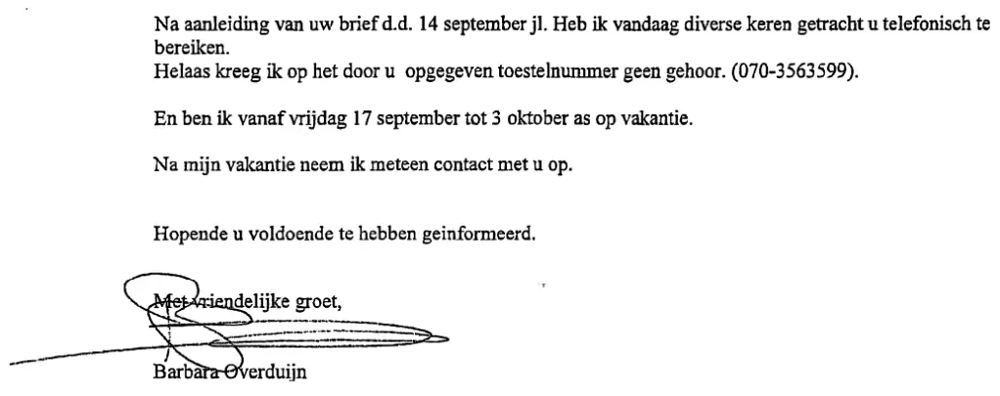

Preuve · Fax
Barbara Overduyn au Médiateur national, fax signé, 16 septembre 1999
Le passage
« Suite à votre lettre du 14 septembre dernier, j’ai tenté aujourd’hui à plusieurs reprises de vous joindre par téléphone. Malheureusement, je n’ai obtenu aucune réponse au numéro de poste que vous aviez indiqué. (070-3563599). Et je serai en vacances du vendredi 17 septembre au 3 octobre prochain. Après mes vacances, je prendrai immédiatement contact avec vous. En espérant vous avoir suffisamment informé. Bien cordialement, Barbara Overduijn » Page 1, le texte du fax suivi de la signature. Traduit du néerlandais ; le texte original figure ci-dessous.
Texte original
“Na aanleiding van uw brief d.d. 14 september jl. Heb ik vandaag diverse keren getracht u telefonisch te bereiken. Helaas kreeg ik op het door u opgegeven toestelnummer geen gehoor. (070-3563599). En ben ik vanaf vrijdag 17 september tot 3 oktober as op vakantie. Na mijn vakantie neem ik meteen contact met u op. Hopende u voldoende te hebben geinformeerd. Met vriendelijke groet, Barbara Overduijn” Les graphies « geinformeerd » (informé) sans tréma et « as » pour « aanstaande » (prochain) sont celles de l’autrice elle-même, tout comme la majuscule dans « jl. Heb ik » (dernier, j’ai).

Pourquoi ce document compte
Dans ce fax du 16 septembre 1999 au Médiateur national, Barbara Overduyn signe « Barbara Overduijn ». L’orthographe « Overduin » utilisée dans le livre avait été reprise du service de renseignement militaire (MID). L’essai rappelle que la demanderesse a reproché à Giltay une faute d’orthographe dans son nom, et qu’est ensuite apparu ce fax, qui prouvait noir sur blanc qu’elle avait mal orthographié son propre nom. Pour la juge des référés M.E. Groeneveld-Stubbe, l’orthographe du nom de la demanderesse figurait parmi les inexactitudes qui soulevaient des questions sur la méticulosité de l’auteur, et constituait ainsi l’un des motifs de l’interdiction totale. En avril 2016, la Cour d’appel de La Haye a toutefois jugé que ces inexactitudes, un âge et l’orthographe d’un nom, ne suffisaient pas à mettre en doute la méticulosité de l’auteur.
Provenance
- Document
- Fax, une page, envoyé à 10:45 selon la ligne imprimée par l’appareil en haut de la page
- Expéditrice
- Barbara Overduyn, qui signe « Barbara Overduijn » sous une signature manuscrite
- Destinataire
- Le Médiateur national, Postbus 29729, 2502 LS Den Haag (La Haye)
- Date
- 16 septembre 1999
- Lieu et date
- La mention dactylographiée du lieu et de la date indique « Den Haag, 16 oktober 1999 » (La Haye, 16 octobre 1999), ce qui ne peut être exact. La ligne de transmission en haut de la page porte 16/09, DON (jeudi), 10:45. À réception, le Médiateur national y a apposé le tampon 16 SEP 1999, et le texte lui-même répond à une lettre du 14 septembre et annonce des vacances à partir du vendredi 17 septembre
- Référence
- « Uw nummer 9807787017 » (votre référence), le numéro de dossier du Médiateur national, que l’expéditrice reprend ici
- Objet
- Une réponse à la lettre du Médiateur du 14 septembre 1999. L’expéditrice avait tenté à plusieurs reprises, le jour de l’envoi, de le joindre par téléphone, serait en vacances du 17 septembre au 3 octobre et reprendrait contact aussitôt après
- Annotation
- « Spoed! » (urgent) est inscrit à la main en haut de la page
- Reçu
- Tampon dateur du Médiateur national, 16 SEP 1999 ; le numéro d’enregistrement inscrit à la main dans le tampon n’est pas lisible avec certitude
- Langue
- Néerlandais
- Pages
- 1
- Dans le livre
- Le chapitre 16 explique comment les officiers du renseignement varient l’orthographe de leur nom pour semer la confusion (page 170 de l’édition néerlandaise, page 162 de l’édition anglaise) ; la note 49 relève des graphies divergentes du nom d’Overduyn et de ceux d’autres officiers du renseignement (pages 231 et 222)
- Conservé par
- Le Médiateur national a reçu et tamponné le fax ; la copie publiée ici provient des archives de l’auteur
- Voir aussi
- Tribunal de La Haye, jugement du 14 décembre 2015 (ECLI:NL:RBDHA:2015:15050)Cour d’appel de La Haye, arrêt du 12 avril 2016 (ECLI:NL:GHDHA:2016:870)
Cité dans :
- l’essai « L’interdiction tombée, le livre debout » dans le chapitre (1) « Un précédent unique »
- la section des voix.
Document : https://
Dernière modification le 13 septembre 2026, consulté le 3 octobre 2026.

Cette page est une fiche de preuve du livre Le Général de dissimulation d’Edwin Giltay et du site web qui l’accompagne.